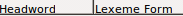
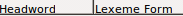

import sys
sys.path.insert(0, '/home/vagrant/Integration-Testing-Framework/sikuli/examples')
from sikuli import *
from test_helper import TestHelper
from flex_regions import *
from Regionplus import *
# Setup
helper = TestHelper("drag_column")
set_flex_helper(helper)
# Opening
#############
helper.Click(, "Couldn't find 'Lexicon' button")
LEFT_SIDEBAR.Click( , "Couldn't find 'Lexicon Edit' button")
# Goal
#############
# Not doing the drag-drop directly, so if it fails we can
# pinpoint what wasn't found
glosses = MID_TOOLBAR.Find(, "Couldn't find 'Glosses' column header")
target = MID_TOOLBAR.Find(,
"'Headword' and 'Lexeme Form' headers not where expected")
dragDrop(glosses, target)
# Check that it's in the new position
helper.Find(Pattern(
, "Couldn't find 'Lexicon Edit' button")
# Goal
#############
# Not doing the drag-drop directly, so if it fails we can
# pinpoint what wasn't found
glosses = MID_TOOLBAR.Find(, "Couldn't find 'Glosses' column header")
target = MID_TOOLBAR.Find(,
"'Headword' and 'Lexeme Form' headers not where expected")
dragDrop(glosses, target)
# Check that it's in the new position
helper.Find(Pattern( ).similar(0.80), "'Glosses' column not in new position")
# Closing
##############
helper.write_success()
# Drag it back to previous position
glosses = MID_TOOLBAR.Find(, "Couldn't find 'Glosses' column header",
restart=True)
target = MID_TOOLBAR.Find(,
"'Lexeme Form' and 'Grammatical Info' headers not where expected",
restart=True)
dragDrop(glosses, target)
).similar(0.80), "'Glosses' column not in new position")
# Closing
##############
helper.write_success()
# Drag it back to previous position
glosses = MID_TOOLBAR.Find(, "Couldn't find 'Glosses' column header",
restart=True)
target = MID_TOOLBAR.Find(,
"'Lexeme Form' and 'Grammatical Info' headers not where expected",
restart=True)
dragDrop(glosses, target)